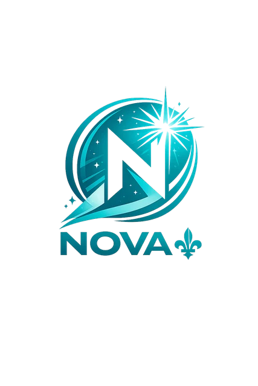

État des lieux
Identifier les dépendances, les risques, les compétences et les services essentiels à maintenir sans rupture.

Projet NovaDémarche citoyenne en constructionLa transition proposée par le Projet Nova doit être lisible, progressive et responsable. Elle vise à expliquer les étapes, protéger la continuité des services publics et donner aux citoyens l’information nécessaire avant toute décision majeure.
Le Projet Nova refuse le saut dans le vide. La transition doit être encadrée par une méthode publique : continuité des services, transparence, responsabilité administrative et validation démocratique.
Identifier les dépendances, les risques, les compétences et les services essentiels à maintenir sans rupture.
Présenter les scénarios, expliquer les conséquences et corriger les angles morts avant toute décision collective.
Les choix nationaux majeurs doivent revenir au peuple avec une information claire, vérifiable et accessible.
Le résumé exécutif sert de guide public pour comprendre l’architecture générale, les priorités et la logique de transition.
L’objectif n’est pas de créer un choc institutionnel, mais de bâtir une transition ordonnée, documentée et soumise à la compréhension citoyenne.